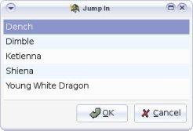

Acciones retradadas y preparadas
Cuando un personajes escope atrasar su acción, clique
en el botón Retrasar enla barra de implementos.
El estado del personaje cambia al Retrazaz.
Una vez que el personaje decide de entrar en combate,
clique en el botón Entrar en combate.
Si más de un personaje están en retraso, entoces
Turn Watcher le pide esgoger aquel que entre en combate.

Cuando un personaje escoge prepararse para un acción,
clique en el botón Prepararse en la barra de implementos.
El estado del personaje cambia al preparar.
Cuando la acción es inicia, clique en el botón
Entrar en combate. Si más de un personaje
están en preparación entonces Turn Watcher
le pide escoger aquel que entrar en combate.
Turn Watcher elimina de manera autimática las
acciones de retraso y de preparación, cuando es de nuevo
el turno de un personaje y que su acción no ha tenido lugar.
|